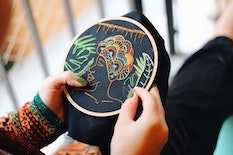

I am a 22 years old French student in a Digital Marketing master at IESEG SCHOOL OF MANAGEMENT. With this online CV, scroll to get to know more about me.
After living in South Africa for 4 years and having completed my entire education in English, I am now fluent and have a solid professional vocabulary. I am a rigorous person who thrives in an organized environment. An efficient communication and a strong adaptability were as well key to ensure the cohesion between the management and the operational teams in my role as General Secretary of our Association Deezert which purpose was to bring water pumps to villages in India.
I am currently working on a thesis as part of my studies. "How luxury brands deal with the increasing demand/need of second hand fashion within the circular economy, a contradictory notion with their exclusive brand image?" This underlines the importance of sustainability in today's corporate behaviour that is forcing the society to reinvent itself even in its core. This preocupation drives my research and I whish to bring my motivation and knowledge to a company who shares the same values.
As sustainability can enhance business, rigor can certainly benefit to creativity. I do personally continuously challenge my creativity through my various passions like photography, video editing, jewelry making or embroidery.
Adding to those soft skills, I have acquired much more specialised skills during my Master's degree such as data analysis, implementation of digital strategies meeting the company's objectives or the use of tools such as Google Analytics or Html/CSS coding.
2018-2023:
IESEG School of Management (AMBA, AACSB, EQUIS). Master Digital Marketing.
2021:
Académie Leon Koźmiński (Kozminski University), Warsaw, Poland: University exchange 6 months
2018:
Saint Erembert High School, in Saint Germain en Laye. Baccalaureat in Economic and Social Science - Honours.
Salesperson in a clothing store "Les Pipelettes" à St Germain en Laye (june 2020)
General Secretary of the DEEZERT association (2019-2020)
DARTY - multimedia salesperson (distribution of household appliances, electronics and cultural products) (june-july 2019)
EDEN PARK - cashier for private sales (October 2018/ October 2019)
Baby-sitting
English courses for children from 10 to 18 years old.
Catering Manager for Alphonse et Madelaine.
Language skills
IT skills
Soft skills
Ballet for 10 years
Theatre/Drama for 10 years: writing and performance of a play in Grade 10.
Creativity on Social Media.
Manual activity: painting, embroidery, scrapbooking...
Taking pictures (using Kodak) and films for memories.
Here is a collage of some of the things that inspire me on a daily basis.
+33 6 50 38 84 24
heloisegouet@gmail.com
Address:
6 rue Gaucher - Saint Germain en Laye - 78100